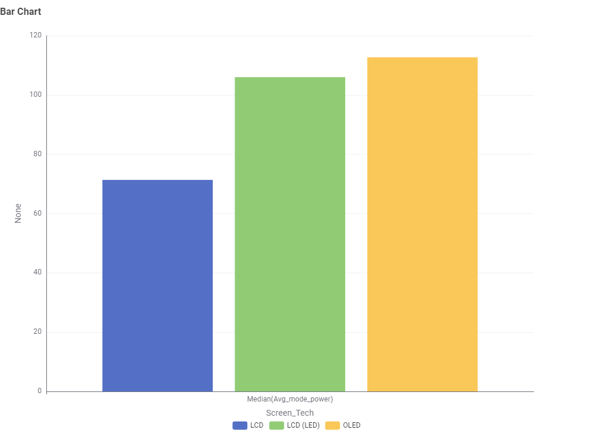
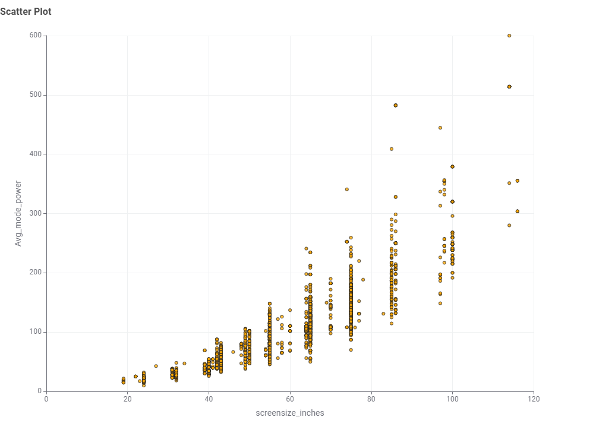
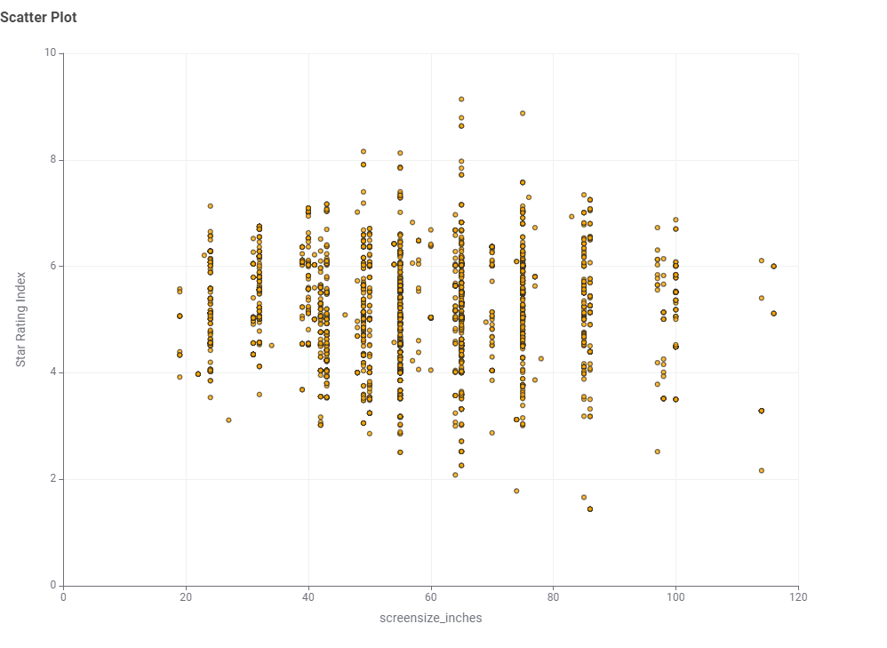

Television Energy Tips
Size & technology matter. Larger screens and older technologies (for example, plasma) use more energy. Modern LED/LCD and OLED televisions are generally more efficient.
- Use the TV’s Energy Saver or Eco mode and reduce brightness where comfortable.
- Disable “always-listening” voice features if you don’t use them; they can add standby draw.
- Consider star rating and annual kWh on the energy label when purchasing.
Placeholder note: Insert simple examples of annual kWh for common TV sizes in Australia to make this page concrete.
TV Energy Insights: Data Story
This section presents findings from the Australian Government’s Television Energy Rating dataset. The aim is to help Australian consumers make informed decisions about technology, size, brand, and efficiency.
Chart 1: What type of TV screen technologies are currently available in Australia and which are the most frequent?

Most TVs in Australia are LCD (LED), while OLED and LCD is less common.
Chart 2: What screen sizes are currently available, and which are the most frequent?

The 65-inch screen size is the most common.
Chart 3: Which brands have a greatest number of different models?

Kongan has the greatest number of different models, followed by LG and Samsung Electronics.
Chart 4: Which type of screen technology consumes the least amount of power?

LCD screen technology consumes the least amount of power.
Chart 5: What is the relationship between screen size and power use?

Larger TVs use more power — the relationship is clearly positive.
Chart 6: What is the relationship between star rating and screen size?

Star ratings are fairly distributed across all sizes; bigger TVs can still be efficient.
Conclusion
When choosing a TV, consider the screen size, brand and energy efficiency. A 65-inch LED TV is one of a popular choice and offer a good energy effiency.